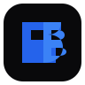
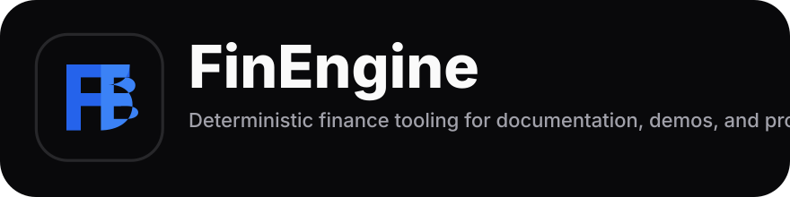
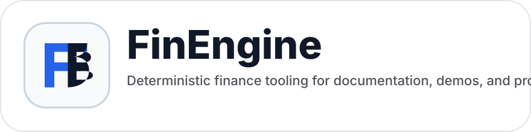
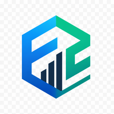
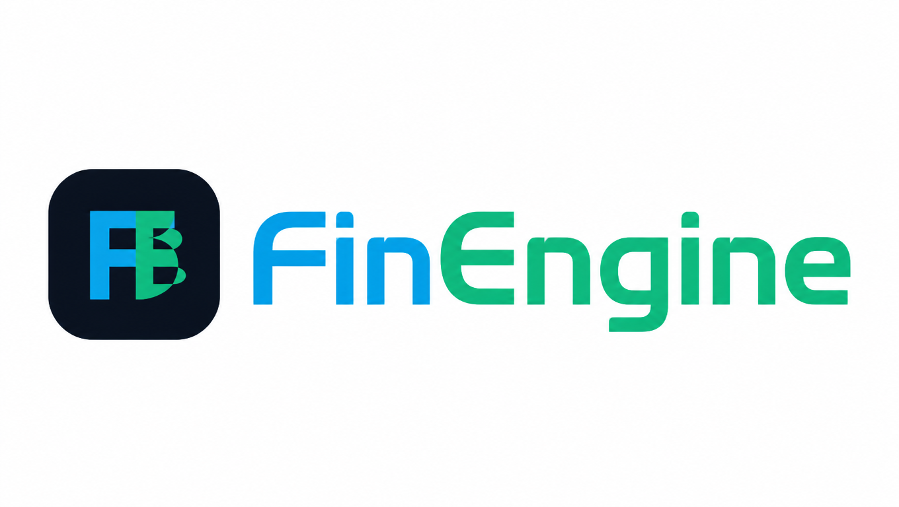
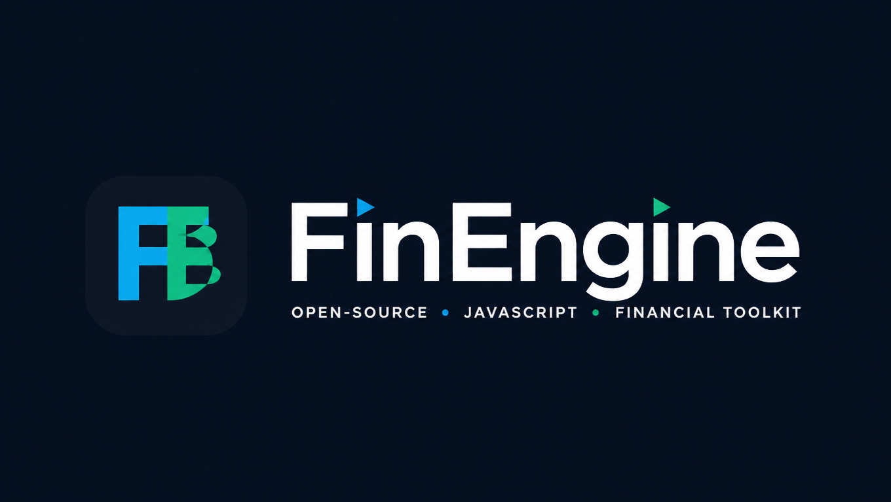

Clear space
Keep one mark-width of breathing room.
At minimum, leave padding equal to the width of the left "F" stem around the logo. Do not squeeze the mark into tight headers or buttons.
This page keeps the real downloadable marks, color references, spacing rules, and safe usage examples in one place so the site stays professional and consistent.
These rules keep the mark readable, premium, and consistent across the website and documentation.
At minimum, leave padding equal to the width of the left "F" stem around the logo. Do not squeeze the mark into tight headers or buttons.
For headers, 40–52 px works best. For favicons and app icons, use the dedicated exported PNG files instead of scaling screenshots.
Use dark or original versions on light surfaces, light or mono-light versions on dark surfaces, and avoid placing the logo over noisy gradients.
The asset set follows the same token family already used across the live site.
#09090B
#2563EB
#3B82F6
#FAFAFA
#F59E0B
Use Inter, then platform system sans fallbacks, for headers, navigation, and body copy.
font-family: Inter, system-ui, -apple-system, BlinkMacSystemFont, 'Segoe UI', sans-serif;
font-family: ui-monospace, SFMono-Regular, Menlo, Consolas, monospace;Every link below points to a committed file in this repository preview so design, docs, and deployment surfaces can reuse the same source of truth.

Primary two-tone icon for site chrome and social usage.
Vector version for crisp scaling in docs and print surfaces.

Best for light canvases where a dark frame is needed.
Best for dark backgrounds and hero overlays.
Single-color white mark for dense dark surfaces.
Single-color dark mark for bright minimal layouts.

Horizontal lockup for dark banners, decks, and README headers.

Horizontal lockup for bright documents and press assets.
For browser tabs and compact web app surfaces.

For PWA manifests and launcher icons.

README and repository header banner on light contexts.

Dark presentation cover and social header variant.
{kind=link}
{kind=link}
{kind=link}
{kind=link}
{kind=link}
{kind=link}
{kind=link}
{kind=link}
{kind=link}
{kind=link}
{kind=link}